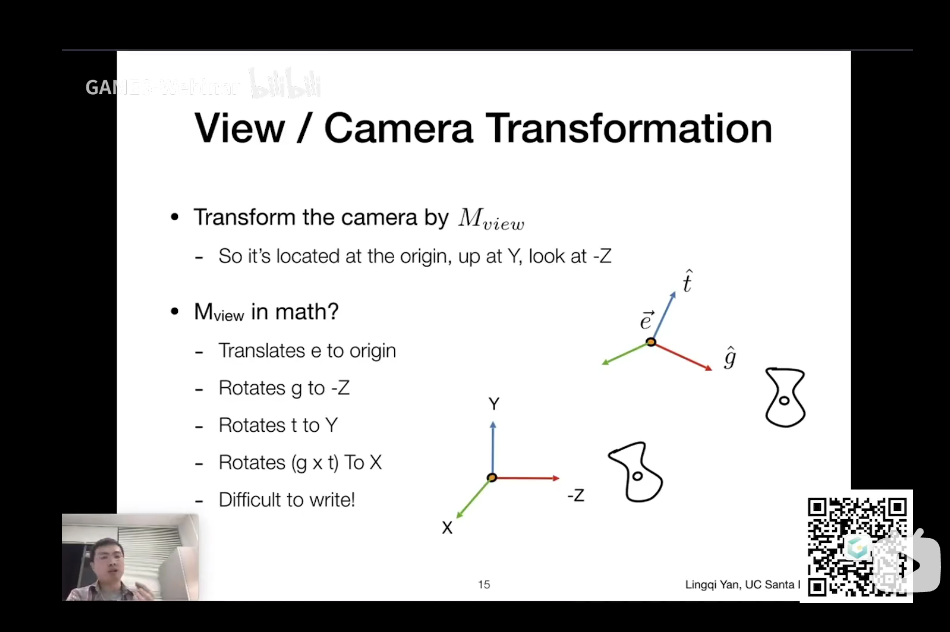
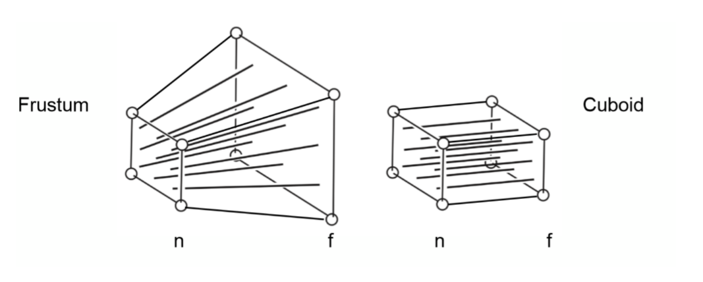

$$rotata-z(\phi)=\left[\begin{matrix}cos\phi & -sin\phi & 0\sin\phi & cos\phi & 0\0 & 0 & 1\end{matrix}\right]$$
$$rotata-x(\phi)=\left[\begin{matrix}1 & 0 & 0\0 & cos\phi & -sin\phi\0 & sin\phi & cos\phi\end{matrix}\right]$$
$$rotata-y(\phi)=\left[\begin{matrix}cos\phi & 0 & sin\phi\0 & 1 & 0\-sin\phi & 0 & cos\phi\end{matrix}\right]$$
because we make z rotates to x the y-rotation is different
Because of translation transformation we need to expand one dimension
$$\left[\begin{matrix} 1 & 0 & 1 \ 0 & 1 & 1 \ 0 & 0 & 1 \end{matrix}\right]\left[\begin{matrix} 1\ 0 \ 1 \end{matrix}\right]=\left[\begin{matrix}2\1\1\end{matrix}\right]$$
The x and y all move 1 in this example
We can use this transformation to rotate by any given axis
$$R=cos\theta*I+(1-cos\theta)\left[\begin{matrix}k1\k2\k3\end{matrix}\right] \left[\begin{matrix}k1&k2&k3\end{matrix}\right]+sin\theta\left[\begin{matrix}0 & -k3 & k2\k3 & 0 & k1\-k2 & k1 & 0\end{matrix}\right]$$
The combination of basic transformations(translation,rotation,scaling,shearing)
We need to remove the camera to the global origin

1.Move the camera to the origin
$$T=\left[\begin{matrix}1 & 0 & 0 & -x_e\0 & 1 & 0 & -y_e\0 & 0 & 1 & -z_e\0 & 0 & 0 & 1\end{matrix}\right]$$
2.Modify the angle to make three vectors corresponding to three axes
As the transformation is difficult, we can think of the inverse transformation first
$$R_{view}^{-1}=\left[\begin{matrix}x_{\hat{g} \times \hat{t}} & x_t & x_{-g} & 0\ y_{\hat{g} \times \hat{t}} & y_t & y_{-g} & 0\z_{\hat{g} \times \hat{t}} & z_t & z_{-g} & 0\0 & 0 & 0 & 1\end{matrix}\right]$$
so that the orginial matrix is
$$R_{view}=\left[\begin{matrix}x_{\hat{g} \times \hat{t}} & y_{\hat{g} \times \hat{t}} & z_{\hat{g} \times \hat{t}} & 0\ x_t & y_t & z_t & 0\ x_{-g} & y_{-g} & z_{-g} & 0\0 & 0 & 0 & 1\end{matrix}\right]$$
The final result is
$$V=R_{view}T$$
$$M_{ortho}=\left[\begin{matrix}\frac{2}{r-l} & 0 & 0 & 0\ 0 & \frac{2}{t-b} & 0 & 0\ 0 & 0 & \frac{2}{n-f} & 0\0 & 0 & 0 & 1\end{matrix}\right]\left[\begin{matrix} 1 & 0 & 0 & -\frac{r+l}{2}\ 0 & 1 & 0 & -\frac{t+b}{2}\ 0 & 0 & 1 & -\frac{n+f}{2} \0 & 0 & 0 & 1\end{matrix}\right]$$

Now we can get the intial vector
$$M_{persp \rightarrow ortho} \left[\begin{matrix}\ x \ y \ z \ 1\end{matrix}\right]=\left[\begin{matrix}\ \frac{nx}{z} \ \frac{ny}{z} \ unknown \ 1\end{matrix}\right]==\left[\begin{matrix}\ nx \ ny \ unknown \ z\end{matrix}\right]$$
Then we know that: 1.The coordinate on near plane will not change 2.The z on far plane will not change
Then we can know the intinal matrix:
$$M_{persp \rightarrow ortho}=\left[\begin{matrix}n & 0 & 0 & 0\ 0 & n & 0 & 0\ 0 & 0 & A & B\0 & 0 & 1 & 0\end{matrix}\right]$$
An+B=$n^2$ Af+B=$f^2$
$$M_{persp \rightarrow ortho}=\left[\begin{matrix}n & 0 & 0 & 0\ 0 & n & 0 & 0\ 0 & 0 & n+f & -fn\0 & 0 & 1 & 0\end{matrix}\right]$$